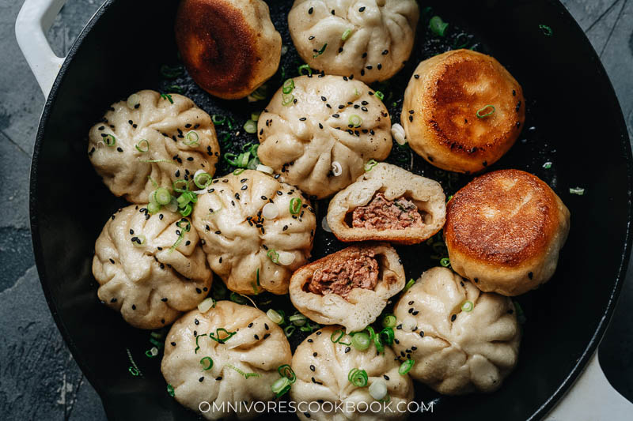

Shanghai Sheng Jian Bao

Description
Try this recipe for sheng jian bao – super juicy and incredibly flavorful pork stuffed into a fluffy yet crispy pan-fried wrapper that satisfies on every level.
Sheng Jian Bao (生煎包), or directly translated as raw fried buns, is one of the signature dishes from Shanghai. By “raw”, it means you pan fry the buns without steaming them first, in which process the dough will rise and the bottom crisp up at the same time. The pan-fried pork bun is different from the steamed stuffed buns (known as ‘baozi’), which is steamed only.
Ingredients
- Ginger water
- Dough
- Ground pork
- Light soy sauce
- Shaoxing wine
- Sesame oil
- Ground white pepper
- Vegetable oil
- Green onions
Steps
- Add the ginger water, light and dark soy sauce, Shaoxing wine, salt, sugar, and white pepper to the ground pork in a large bowl. Beat with a pair of chopsticks or a wooden spatula in a circular motion, until all the liquid is absorbed and the meat is sticky. This process might take a few minutes.
- Add the green onions and sesame oil. Mix until they are incorporated. Cover the bowl with plastic wrap. Store in the fridge until ready to use.
- Poke a hole in the center of the dough you’re working with. Stretch the dough into a large oval by running your fingers along the inside of the hole in a circular motion. Once the diameter of the dough is about 1” (2.5 cm), tear apart the ring so it creates a long, thin strip.
- Work on one piece of dough at a time – take one dough piece and place in front of you. Roll it with a rolling pin in one hand, using the other hand to rotate the dough while rolling, until the diameter reaches 5” (13 cm). You should keep the edges thinner than the center, so the wrapper of the bun will be even once you make the pleats.
- Repeat with the remaining dough pieces to wrap all the buns. Keep the wrapped buns under a piece of plastic wrap to prevent drying out. Once done wrapping, let rest for 10 minutes. Once rested, you should cook the buns immediately. You can store the wrapped buns in a sealed container in the fridge for up to 1 hour before cooking.
- Turn the heat to medium-low and cook for another 2 to 3 minutes. Turn the heat off and remove the pan from the stove. Let the buns rest with the lid on for an additional 2 minutes. Remove the lid and transfer to a plate. Repeat the steps to cook the rest of the buns.
- Serve hot immediately. Or you can store the cooked buns in an airtight container in the fridge for up to 4 days or in the freezer for up to 3 months.